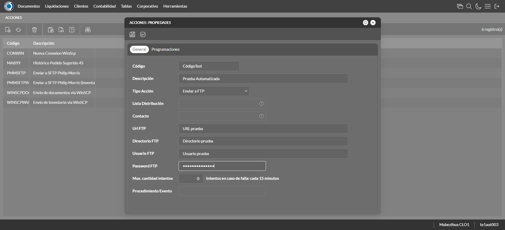
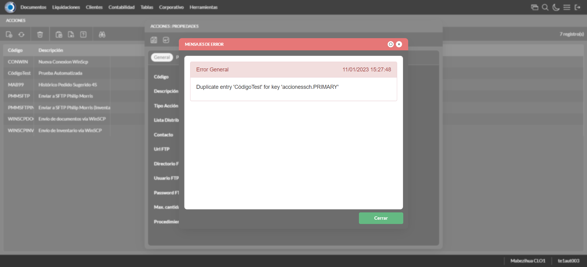
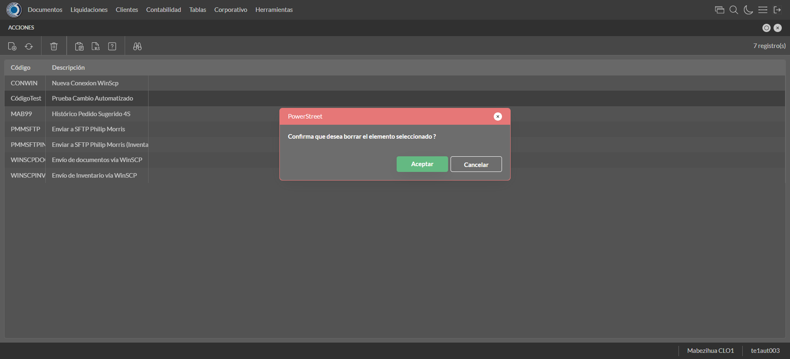

Desarrollado por : Area de Testing PWST
Fecha y hora de inicio : 2023-01-11 09:27:06
Duracion : 0:01:07.715182
Resultado : Total 8，Correctos 7 ，Errores 1 ，Taza de resultado 87.50%
Resumen 87.50% Errores 1 Fallidos 0 Correctos 7 Test realizados 8
| Caso de Prueba | Total | Correctos | Fallido | Error | Detalles | Captura del error |
| AccionesScheduler3.Test: Escenario 1 de Autorizaciones de Credito | 8 | 7 | 0 | 1 | Detalles | |
test |
ft1_1: 2023-01-11 09:27:08,301 - root - INFO - Se abre el chrome
2023-01-11 09:27:09,544 - root - INFO - Entra a la URL
2023-01-11 09:27:09,669 - root - INFO - Maximiza la pantalla
Traceback (most recent call last):
File "C:\Users\jsand\AppData\Local\Programs\Python\Python310\lib\site-packages\selenium-4.4.0-py3.10.egg\selenium\webdriver\remote\switch_to.py", line 87, in frame
frame_reference = self._driver.find_element(By.ID, frame_reference)
File "C:\Users\jsand\AppData\Local\Programs\Python\Python310\lib\site-packages\selenium-4.4.0-py3.10.egg\selenium\webdriver\remote\webdriver.py", line 856, in find_element
return self.execute(Command.FIND_ELEMENT, {
File "C:\Users\jsand\AppData\Local\Programs\Python\Python310\lib\site-packages\selenium-4.4.0-py3.10.egg\selenium\webdriver\remote\webdriver.py", line 434, in execute
self.error_handler.check_response(response)
File "C:\Users\jsand\AppData\Local\Programs\Python\Python310\lib\site-packages\selenium-4.4.0-py3.10.egg\selenium\webdriver\remote\errorhandler.py", line 243, in check_response
raise exception_class(message, screen, stacktrace)
selenium.common.exceptions.NoSuchElementException: Message: no such element: Unable to locate element: {"method":"css selector","selector":"[id="mainFrame"]"}
(Session info: chrome=108.0.5359.125)
Stacktrace:
Backtrace:
(No symbol) [0x006CF243]
(No symbol) [0x00657FD1]
(No symbol) [0x0054D04D]
(No symbol) [0x0057C0B0]
(No symbol) [0x0057C22B]
(No symbol) [0x005AE612]
(No symbol) [0x005985D4]
(No symbol) [0x005AC9EB]
(No symbol) [0x00598386]
(No symbol) [0x0057163C]
(No symbol) [0x0057269D]
GetHandleVerifier [0x00969A22+2655074]
GetHandleVerifier [0x0095CA24+2601828]
GetHandleVerifier [0x00778C0A+619850]
GetHandleVerifier [0x00777830+614768]
(No symbol) [0x006605FC]
(No symbol) [0x00665968]
(No symbol) [0x00665A55]
(No symbol) [0x0067051B]
BaseThreadInitThunk [0x76796BD9+25]
RtlGetFullPathName_UEx [0x77B58FD2+1218]
RtlGetFullPathName_UEx [0x77B58F9D+1165]
During handling of the above exception, another exception occurred:
Traceback (most recent call last):
File "C:\Users\jsand\AppData\Local\Programs\Python\Python310\lib\site-packages\selenium-4.4.0-py3.10.egg\selenium\webdriver\remote\switch_to.py", line 90, in frame
frame_reference = self._driver.find_element(By.NAME, frame_reference)
File "C:\Users\jsand\AppData\Local\Programs\Python\Python310\lib\site-packages\selenium-4.4.0-py3.10.egg\selenium\webdriver\remote\webdriver.py", line 856, in find_element
return self.execute(Command.FIND_ELEMENT, {
File "C:\Users\jsand\AppData\Local\Programs\Python\Python310\lib\site-packages\selenium-4.4.0-py3.10.egg\selenium\webdriver\remote\webdriver.py", line 434, in execute
self.error_handler.check_response(response)
File "C:\Users\jsand\AppData\Local\Programs\Python\Python310\lib\site-packages\selenium-4.4.0-py3.10.egg\selenium\webdriver\remote\errorhandler.py", line 243, in check_response
raise exception_class(message, screen, stacktrace)
selenium.common.exceptions.NoSuchElementException: Message: no such element: Unable to locate element: {"method":"css selector","selector":"[name="mainFrame"]"}
(Session info: chrome=108.0.5359.125)
Stacktrace:
Backtrace:
(No symbol) [0x006CF243]
(No symbol) [0x00657FD1]
(No symbol) [0x0054D04D]
(No symbol) [0x0057C0B0]
(No symbol) [0x0057C22B]
(No symbol) [0x005AE612]
(No symbol) [0x005985D4]
(No symbol) [0x005AC9EB]
(No symbol) [0x00598386]
(No symbol) [0x0057163C]
(No symbol) [0x0057269D]
GetHandleVerifier [0x00969A22+2655074]
GetHandleVerifier [0x0095CA24+2601828]
GetHandleVerifier [0x00778C0A+619850]
GetHandleVerifier [0x00777830+614768]
(No symbol) [0x006605FC]
(No symbol) [0x00665968]
(No symbol) [0x00665A55]
(No symbol) [0x0067051B]
BaseThreadInitThunk [0x76796BD9+25]
RtlGetFullPathName_UEx [0x77B58FD2+1218]
RtlGetFullPathName_UEx [0x77B58F9D+1165]
During handling of the above exception, another exception occurred:
Traceback (most recent call last):
File "C:\xampp\htdocs\versiones\automatizaciones\AutoPWST\03ASCH\testCase\AccionesScheduler3.py", line 32, in test
self.driver.switch_to.frame("mainFrame")
File "C:\Users\jsand\AppData\Local\Programs\Python\Python310\lib\site-packages\selenium-4.4.0-py3.10.egg\selenium\webdriver\remote\switch_to.py", line 92, in frame
raise NoSuchFrameException(frame_reference)
selenium.common.exceptions.NoSuchFrameException: Message: mainFrame
|
|
||||
test_000: Ingresa a la base de datos |
pt1_2: 2023-01-11 09:27:13,470 - root - INFO - Escribe el usuario
2023-01-11 09:27:13,708 - root - INFO - Escribe la contraseña
2023-01-11 09:27:13,920 - root - INFO - Se dio clic en el boton ingresar
2023-01-11 09:27:14,765 - root - INFO - Ejecutar Enterprise
2023-01-11 09:27:18,858 - root - INFO - Cambia entre pestañas
|
|
||||
test_001: Abre menu y ejecuta pantalla |
pt1_3: 2023-01-11 09:27:28,504 - root - INFO - Abre la pantalla de Acciones Scheduler
2023-01-11 09:27:29,099 - root - INFO - La pantalla ejecutada es Acciones.
2023-01-11 09:27:29,101 - root - INFO - Captura: C:\xampp\htdocs\versiones\automatizaciones\AutoPWST\03ASCH\report\img screen：20230111_09_27_29.png
2023-01-11 09:27:29,842 - root - INFO - Se da clic en el registro creado, para proceder a modificarlo.
2023-01-11 09:27:30,493 - root - INFO - Se hace el cambio de pestaña para continuar con el registro nuevo
2023-01-11 09:27:36,277 - root - INFO - Se da clic en el registro creado, para proceder a modificarlo.
2023-01-11 09:27:36,352 - root - INFO - Se presiona el boton 'Eliminar', para eliminar el registro.
2023-01-11 09:27:36,473 - root - INFO - Se da clic en el boton Guardar; se debe modificar la informacion del registro.
2023-01-11 09:27:37,044 - root - INFO - Se da clic en el registro creado, para proceder a modificarlo.
2023-01-11 09:27:37,100 - root - INFO - Se presiona el boton 'Eliminar', para eliminar el registro.
2023-01-11 09:27:37,693 - root - INFO - Se confirma el eliminado del registro
2023-01-11 09:27:37,873 - root - INFO - Se presiona el boton 'Refrescar', para crear un nuevo registro igual al anterior.
2023-01-11 09:27:38,053 - root - INFO - Se presiona el boton 'Nuevo', para crear un nuevo registro.
|

|
||||
test_002: Abre la ventana de nuevo y crear un registro |
pt1_4: 2023-01-11 09:27:38,600 - root - INFO - Se abrio la pantalla para el ingreso de un registro nuevo.
2023-01-11 09:27:38,628 - root - INFO - El campo 'Codigo' si se encuentra visible.
2023-01-11 09:27:38,658 - root - INFO - El campo 'Descrición' si se encuentra visible.
2023-01-11 09:27:38,688 - root - INFO - El campo 'Tipo Acción' si se encuentra visible.
2023-01-11 09:27:38,718 - root - INFO - El campo 'Url FTP' si se encuentra visible.
2023-01-11 09:27:38,747 - root - INFO - El campo 'Directorio FTP' si se encuentra visible.
2023-01-11 09:27:38,778 - root - INFO - El campo 'Usuario FTP' si se encuentra visible.
2023-01-11 09:27:38,808 - root - INFO - El campo 'Password FTP' si se encuentra visible.
2023-01-11 09:27:38,839 - root - INFO - El campo 'Max. cantidad intentos' si se encuentra visible.
2023-01-11 09:27:38,945 - root - INFO - Ingresa el codigo del nuevo registro
2023-01-11 09:27:39,041 - root - INFO - Ingresa la descripción del nuevo registro
2023-01-11 09:27:41,581 - root - INFO - Ingresa la Url FTP del nuevo registro
2023-01-11 09:27:41,671 - root - INFO - Ingresa el Directorio FTP del nuevo registro
2023-01-11 09:27:41,743 - root - INFO - Ingresa el Usuario FTP del nuevo registro
2023-01-11 09:27:41,807 - root - INFO - Ingresa la Password FTP del nuevo registro
2023-01-11 09:27:41,808 - root - INFO - Captura: C:\xampp\htdocs\versiones\automatizaciones\AutoPWST\03ASCH\report\img screen：20230111_09_27_41.png
2023-01-11 09:27:42,056 - root - INFO - Ingresa el Maximo de Intentos del nuevo registro
2023-01-11 09:27:42,102 - root - INFO - Se hace el cambio de pestaña para continuar con el registro nuevo
2023-01-11 09:27:42,718 - root - INFO - Se presiona el boton 'Nuevo', para crear un nuevo registro.
2023-01-11 09:27:43,301 - root - INFO - El campo 'Programación' si se encuentra visible.
2023-01-11 09:27:44,441 - root - INFO - Se da clic en el boton Guardar; se debe crear un nuevo registro.
2023-01-11 09:27:44,714 - root - INFO - Se da clic en el boton Guardar; se debe crear un nuevo registro.
|
 | ||||
test_003: Repetir el registro creado anteriormente |
pt1_5: 2023-01-11 09:27:44,973 - root - INFO - Se presiona el boton 'Refrescar', para crear un nuevo registro igual al anterior.
2023-01-11 09:27:45,138 - root - INFO - Se presiona el boton 'Nuevo', para crear un nuevo registro igual al anterior.
2023-01-11 09:27:45,685 - root - INFO - Se abrio la pantalla para el ingreso de un registro nuevo.
2023-01-11 09:27:45,741 - root - INFO - El campo 'Codigo' si se encuentra visible.
2023-01-11 09:27:45,771 - root - INFO - El campo 'Descrición' si se encuentra visible.
2023-01-11 09:27:45,790 - root - INFO - El campo 'Tipo Acción' si se encuentra visible.
2023-01-11 09:27:45,820 - root - INFO - El campo 'Url FTP' si se encuentra visible.
2023-01-11 09:27:45,850 - root - INFO - El campo 'Directorio FTP' si se encuentra visible.
2023-01-11 09:27:45,879 - root - INFO - El campo 'Usuario FTP' si se encuentra visible.
2023-01-11 09:27:45,906 - root - INFO - El campo 'Password FTP' si se encuentra visible.
2023-01-11 09:27:45,930 - root - INFO - El campo 'Max. cantidad intentos' si se encuentra visible.
2023-01-11 09:27:45,989 - root - INFO - Ingresa el codigo del nuevo registro
2023-01-11 09:27:46,091 - root - INFO - Ingresa la descripción del nuevo registro
2023-01-11 09:27:46,443 - root - INFO - Captura: C:\xampp\htdocs\versiones\automatizaciones\AutoPWST\03ASCH\report\img screen：20230111_09_27_46.png
2023-01-11 09:27:47,723 - root - INFO - Ingresa la Url FTP del nuevo registro
2023-01-11 09:27:47,805 - root - INFO - Ingresa el Directorio FTP del nuevo registro
2023-01-11 09:27:47,881 - root - INFO - Ingresa el Usuario FTP del nuevo registro
2023-01-11 09:27:47,980 - root - INFO - Ingresa la Password FTP del nuevo registro
2023-01-11 09:27:48,035 - root - INFO - Ingresa el Maximo de Intentos del nuevo registro
2023-01-11 09:27:48,083 - root - INFO - Se da clic en el boton Guardar; NO se debe crear un nuevo registro.
2023-01-11 09:27:49,092 - root - INFO - Captura: C:\xampp\htdocs\versiones\automatizaciones\AutoPWST\03ASCH\report\img screen：20230111_09_27_49.png
2023-01-11 09:27:54,648 - root - INFO - Se presiona el boton 'Cerrar', para cerrar el mensaje de duplicidad de llave primaria
2023-01-11 09:27:55,653 - root - INFO - Captura: C:\xampp\htdocs\versiones\automatizaciones\AutoPWST\03ASCH\report\img screen：20230111_09_27_55.png
2023-01-11 09:27:55,895 - root - INFO - Se presiona el boton 'Cerrar', para cerrar el mensaje de duplicidad de llave primaria
2023-01-11 09:27:56,017 - root - INFO - Se presiona el boton 'Cerrar', para cerrar la ventana
|
 | ||||
test_004: Modificar el registro |
pt1_6: 2023-01-11 09:27:56,136 - root - INFO - Se presiona el boton 'Refrescar', para crear un nuevo registro igual al anterior.
2023-01-11 09:27:57,796 - root - INFO - Se da clic en el registro creado, para proceder a modificarlo.
2023-01-11 09:27:58,506 - root - INFO - Se modifica el contenido del campo Descripcion
2023-01-11 09:27:58,844 - root - INFO - Captura: C:\xampp\htdocs\versiones\automatizaciones\AutoPWST\03ASCH\report\img screen：20230111_09_27_58.png
2023-01-11 09:27:59,153 - root - INFO - Ingresa la Url FTP del nuevo registro
2023-01-11 09:27:59,278 - root - INFO - Ingresa el Directorio FTP del nuevo registro
2023-01-11 09:27:59,409 - root - INFO - Ingresa el Usuario FTP del nuevo registro
2023-01-11 09:27:59,496 - root - INFO - Ingresa la Password FTP del nuevo registro
2023-01-11 09:28:00,511 - root - INFO - Captura: C:\xampp\htdocs\versiones\automatizaciones\AutoPWST\03ASCH\report\img screen：20230111_09_28_00.png
2023-01-11 09:28:00,777 - root - INFO - Ingresa el Maximo de Intentos del nuevo registro
2023-01-11 09:28:00,831 - root - INFO - Se hace el cambio de pestaña para continuar con el registro nuevo
2023-01-11 09:28:01,948 - root - INFO - Se da clic en el registro creado, para proceder a modificarlo.
2023-01-11 09:28:02,003 - root - INFO - Se presiona el boton 'Eliminar', para eliminar el registro.
2023-01-11 09:28:02,119 - root - INFO - Se presiona el boton 'Nuevo', para crear un nuevo registro.
2023-01-11 09:28:03,837 - root - INFO - Se da clic en el boton Guardar; se debe crear un nuevo registro.
2023-01-11 09:28:04,120 - root - INFO - Se da clic en el boton Guardar; se debe modificar la informacion del registro.
|
|||||
test_005: Eliminar el registro creado |
pt1_7: 2023-01-11 09:28:04,386 - root - INFO - Se presiona el boton 'Refrescar', para proceder a eliminar el registro.
2023-01-11 09:28:06,007 - root - INFO - Se da clic en el registro creado, para proceder a modificarlo.
2023-01-11 09:28:06,586 - root - INFO - Se hace el cambio de pestaña para continuar con el registro nuevo
2023-01-11 09:28:07,734 - root - INFO - Se da clic en el registro creado, para proceder a modificarlo.
2023-01-11 09:28:07,790 - root - INFO - Se presiona el boton 'Eliminar', para eliminar el registro.
2023-01-11 09:28:07,920 - root - INFO - Se da clic en el boton Guardar; se debe modificar la informacion del registro.
2023-01-11 09:28:08,510 - root - INFO - Se da clic en el registro creado, para proceder a modificarlo.
2023-01-11 09:28:08,573 - root - INFO - Se presiona el boton 'Eliminar', para eliminar el registro.
2023-01-11 09:28:09,590 - root - INFO - Captura: C:\xampp\htdocs\versiones\automatizaciones\AutoPWST\03ASCH\report\img screen：20230111_09_28_09.png
2023-01-11 09:28:09,759 - root - INFO - Se confirma el eliminado del registro
2023-01-11 09:28:09,987 - root - INFO - Se presiona el boton 'Refrescar', para crear un nuevo registro igual al anterior.
2023-01-11 09:28:10,171 - root - INFO - Se presiona el boton 'Cerrar', para cerrar la pantalla de Categorias Fiscales.
|
 | ||||
test_006: Cerrar_Navegador |
pt1_8: 2023-01-11 09:28:14,460 - root - INFO - Se cierra chrome
|
|
||||
| Caso de prueba | 8 | 7 | 0 | 1 | Taza de resultado：87.50% | |